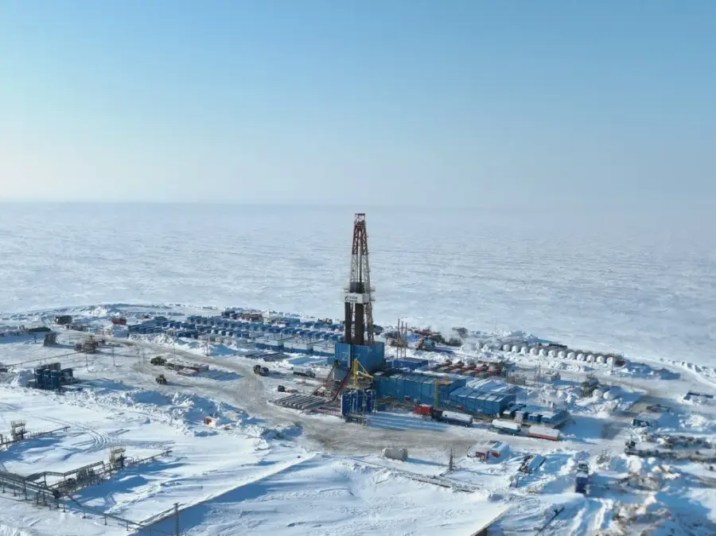
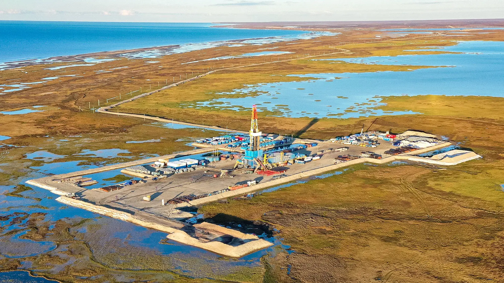
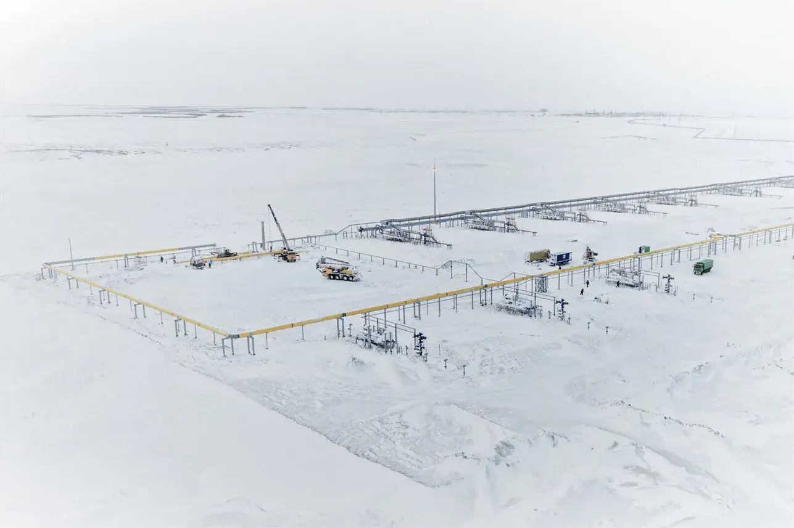
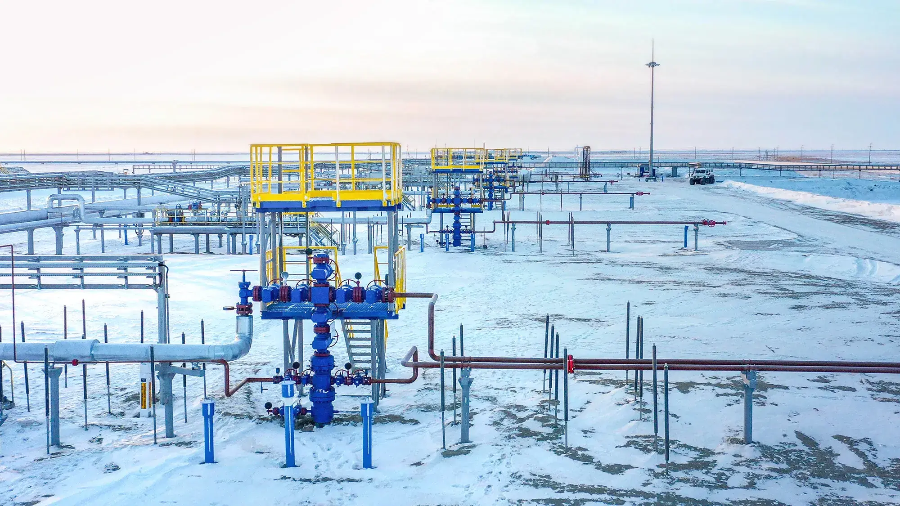
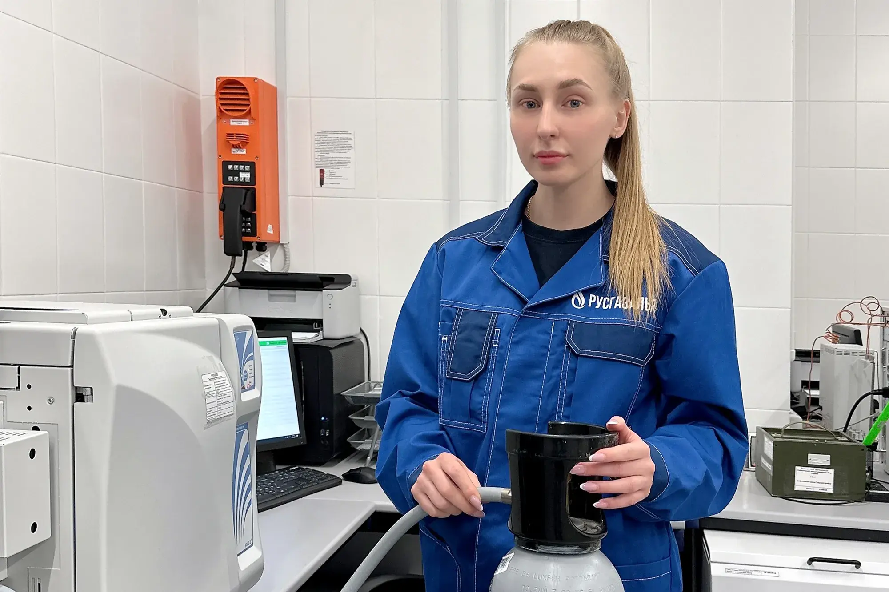
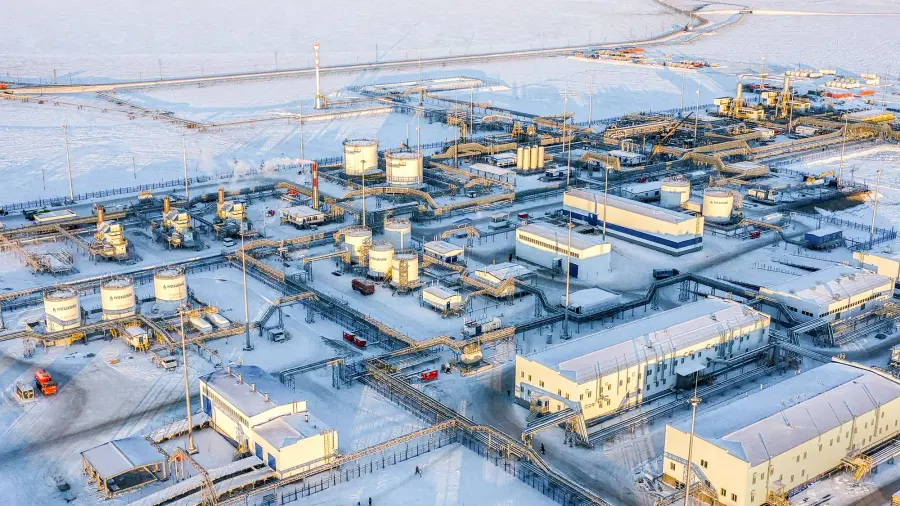
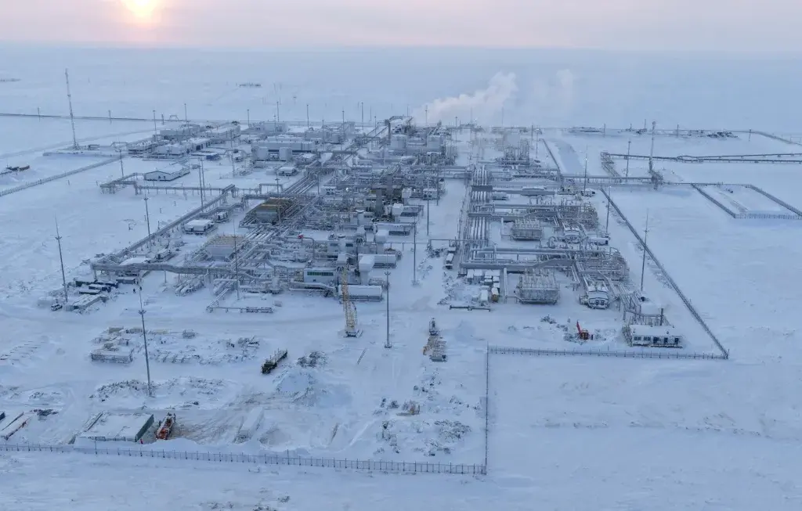
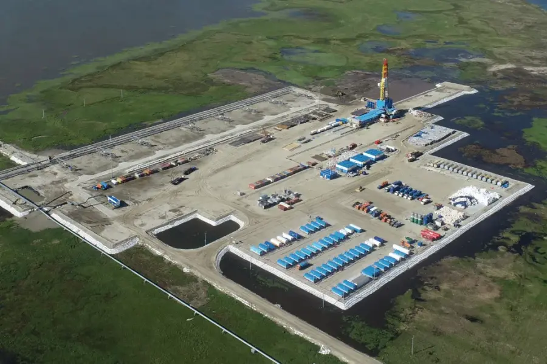
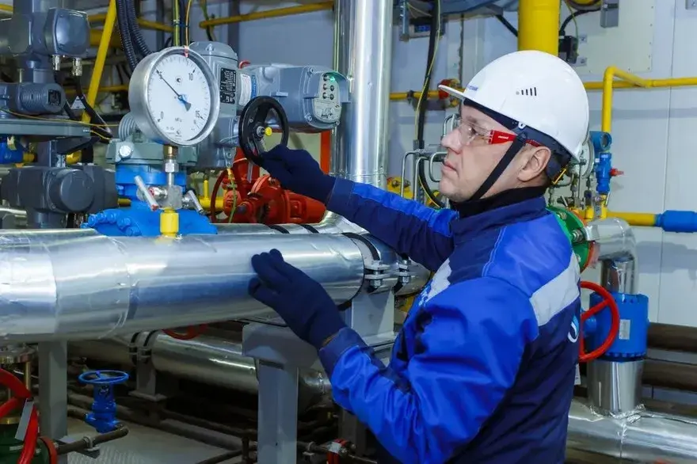

Газ лежит под морем
Семаковское — крупнейшее из трёх месторождений компании: более 320 млрд м³ извлекаемых запасов газа. Основная их часть — в акватории Тазовской губы Карского моря, на значительном удалении от берега.


Парусовое, Северо-Парусовое и Семаковское месторождения в Ямало-Ненецком автономном округе.

Основные запасы Семаковского лежат под акваторией Тазовской губы Карского моря. Их извлекают скважинами с большим отходом от вертикали — без дорогой морской инфраструктуры.

В сентябре 2025 года завершено строительство всех 11 эксплуатационных скважин. Ствол самой протяжённой — 6205 метров.

С января 2024 года на Семаковском работает своя химико-аналитическая лаборатория: 8 сотрудников вахтовым методом, отечественные газовые хроматографы.
Так устроен Семаковский проект. Выберите этап или идите по порядку. Пропустить к месторождениям
Семаковское — крупнейшее из трёх месторождений компании: более 320 млрд м³ извлекаемых запасов газа. Основная их часть — в акватории Тазовской губы Карского моря, на значительном удалении от берега.

Вместо морских сооружений на берегу построена сеть ERD-скважин (Extended Reach Drilling). Это первое в отечественной практике морское газовое месторождение, которое разрабатывают такими скважинами.
Скважина № 1213, внесена в «Книгу рекордов России»:
Газ проходит установку комплексной подготовки (УКПГ). Рядом — дожимная компрессорная станция и электростанция собственных нужд. В Фазе 2 мощности всех трёх объектов увеличили.

По газопроводу-подключению газ поступает в Единую систему газоснабжения России. Месторождения расположены близко к действующим центрам добычи и транспорта — посёлку Ямбург и Новому Уренгою — и к газотранспортной системе ПАО «Газпром».
122 кмгазопровод-подключение
Базовая стратегия проекта: газ идёт как сырьё на газохимические предприятия, на собственные потребности группы «Газпром» и потребителям внутреннего рынка.
«…наша компания будет ежегодно подавать объем газа, сопоставимый с потребностью такого крупного города, как, например, Санкт-Петербург»Денис Тихомиров, генеральный директор, 03.04.2026
12 млрд м³в год — до такого объёма с запуском Фазы 2 увеличится добыча на Семаковском (с 7,5 млрд м³)
Более 420 млрд м³ извлекаемых запасов газа и более 7 млн тонн жидких углеводородов (нефть и конденсат). По всем трём защищены проекты разработки.

В эксплуатации с декабря 2022 года. Более 320 млрд м³ извлекаемых запасов газа, основная часть — под Тазовской губой.
Идёт добыча
Расположено целиком на суше.
Проект разработки защищён
Расположено целиком на суше.
Проект разработки защищён
Запасы Парусового и Северо-Парусового вместе оцениваются более чем в 100 млрд м³ газа.
Запасы трёх месторождений и Семаковского — по пресс-релизу от 27.03.2026; сведения о Парусовом и Северо-Парусовом — из раздела «География деятельности».
От регистрации компании до запуска Фазы 2.

Учреждён «РусГазАльянс» — для разработки Парусового, Северо-Парусового и Семаковского месторождений.
Фаза 1: началась добыча природного газа на Семаковском.
На месторождении запущена собственная химико-аналитическая лаборатория.
Всероссийский рекорд на скважине № 1213: ствол 6205 м, коэффициент отклонения 6,38.
Построены все 11 эксплуатационных скважин Фазы 2.
Накопленная добыча на Семаковском превысила 25 млрд м³.
Введены объекты Фазы 2. Добыча Семаковского увеличится до 12 млрд м³ в год. Дальше — дополнительные мощности дожимной компрессорной станции для поддержания полки добычи.
Совместное предприятие группы «Газпром» (через ООО «Газпром добыча Ямбург», 100-процентное дочернее общество ПАО «Газпром») и АО «РусГазДобыча».
Бизнес-модель предусматривает экономически выгодную добычу природного газа для широкого круга потребителей, включая газохимию и электрогенерацию. Одна из важных задач — повышать маржинальность сырья, перерабатывая его в продукты с высокой добавленной стоимостью.
Лицензионные участки расположены в суровом регионе с хрупкой природой. Основополагающий принцип — бережное отношение к ней, к правам и интересам будущих поколений.
Интегрированная система менеджмента охраны труда, промышленной, пожарной безопасности и охраны среды сертифицирована по ISO 14001:2005 и ISO 45001:2018.
Компания помогла подключить Антипаюту к широкополосному интернету (новость от 07.11.2024).

Отправьте резюме на адрес кадровой службы — или найдите вакансии компании в поиске по названию «РусГазАльянс».
Информацию об открытых конкурентных закупках и исследованиях рынка компания размещает на электронной торговой площадке Газпромбанка (ЭТП ГПБ).
Все вопросы о закупках и предквалификационных отборах.
zakupki@rusgasalliance.ruУчастник закупки может обратиться по порядку её проведения: заполните форму обращения, подпишите и пришлите скан с подтверждающими документами. Условия договоров и споры об их исполнении комиссия не рассматривает.
tender@rusgasalliance.ru